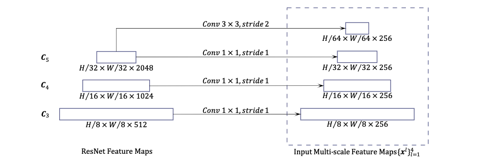

Deformable DETR
Deformable DETR: Deformable Transformers For End-to-end Object Detection （2020.8）
DETR的问题： 1.收敛速度慢 2.小目标检测效果差
Deformable DETR结合和变形卷积和DETR解决DETR的问题
每个特征像素不必与所有的特征像素交互计算，只需与部分基于采样的其他像素交互即可，加快了模型的收敛
DCN
可形变卷积公式
1 2 3 4 5 6 7 | |
对每个输入的特征图，比如使用3x3的卷积核，offset就是2x3x3=18（x，y），先过卷积层得到feature map上每个点对应的9个点的offset的xy，然后通过算出每个点对应的九个点的值（对9个点每个点用双线性插值算出值），然后把每个点对应的3x3的搞在一起，比如10x10的特征图变成30x30，然后过一个3x3的kernel，strike为3的卷积层。DCN可训练的参数就是得到offset的卷积核的参数以及最后那个卷积核的参数。这里对于所有进defromConv2D的特征图都用的同一个偏移量。
Deformable Transformers

Multi-Head Attention
这里重写了一下多头注意力的计算公式
和 \(\text{softmax}(\frac{QK^T}{\sqrt{d}})V\)那个的多头版的公式是等价的。d2l-multihead
其中 \(q \in \Omega_q\) 表示query的index，\(k \in \Omega_k\) 表示key和value的index（包括所有的HW个点），\(z_q,x_k\in \mathbb{R}^C\)，M表示头的个数，\(\mathbf{W}_m^\prime \in \mathbb{R}^{C_v \times C}\)，\(\mathbf{W}_m \in \mathbb{R}^{C \times C_v}\) （\(C_v =C / M\)），attention的权重\(A_{mqk} \propto \exp{(\frac{z_q^TU_m^TV_mx_k}{\sqrt{C_v}})}\)，并且满足\(\sum_{k \in \Omega_k}A_{mqk} = 1\) （softmax），\(U_m,V_m \in \mathbb{R}^{C_v \times C}\)。
这种计算方式有两个问题：一是收敛很慢，需要大量的训练，因为当 \(N_k\) 很大的时候\(A_{mqv}\)接近于\(1/N_k\)导致输入特征的梯度模糊；二是注意力计算的复杂度很高，上式的计算复杂度为 \(O(N_qC^2 + N_k C^2 + N_qN_kC)\)（没搞懂怎么算的文章是这样），在图像领域一般有\(N_q = N_k \gg C\)，有复杂度为\(O(N_qN_kC)\)随着特征图大小的二次复杂度增长。
Deformable Attention
给定一个 feature map \(\mathbf{x} \in \mathbb{R}^{C \times H \times W}\),2-d的point \(p_q\)，这里\(K\)表示采样的点的个数，有 \(HW \gg K\)
这里 \(\Delta p_{mqk} \in \mathbb{R}^2\) 没有约束，由于\(\mathbf{x}(p_q + \Delta p_{mqk})\) 并不一定是整数，使用了双线性插值计算。
Multi-scale Deformable Attention
L表示输入特征的层级，\(\phi_l(\hat{p}_q)\) 将归一化坐标 \(\hat{p}_q\) 重新缩放到第 \(l\) 层级的特征图，\(A_{mlqk}\) 满足 \(\sum_{l=1}^L\sum_{k=1}^KA_{mlqk} = 1\)
当 \(L=K=1\)，\(W_m^\prime\) 为单位矩阵呢时相当于可变形卷积
Encoder Decoder
用多尺度可形变注意力模块替换DETR中处理特征的Transformer Encoder
Decoder中只把cross-attention的模块替换为多尺度可变形注意力，self-attention保持不变
Additional Inprovements
Iterative Bounding Box Refinement和Two-Stage Deformable DETR
Iterative Bounding Box Refinement
Bounding Box 偏移量修正 deformable DERR 的bbox预测头的预测结果是相对于参考点的坐标偏移量，这样设计可以降低网络的优化难度
首先经过simoid得到的参考点坐标过一个逆函数，后面加上偏移量修正坐标
就是每次过一层decoder，reference point都用输出的参考点的值（不启用的话就是用初始的值加上偏移量）
第d层decoder layer
初始化\(b^{0}_{qx} = \hat{p}_{qx}\)，\(b^{0}_{qy} = \hat{p}_{qy}\)，\(b^{0}_{qw} = 0.1\)，\(b^{0}_{qh} = 0.1\)
并且每一层decoder得到box的FFN不共享参数（clone了6个）。
Two-Stage Deformable DETR
没有two stage的话decoder的query embedding是可以学习的参数，two stage decoder 的query是encoder的输出得到proposal，直接用decoder最后的class分类头得到top score（300个）的得到proposal生成的。
Code
找到了一篇源码解析的博客
MSDefromAtten
1 2 3 4 5 6 7 8 9 10 11 12 13 14 15 16 17 18 19 20 21 22 23 24 25 26 27 28 29 30 31 32 33 34 35 36 37 38 39 40 41 42 43 44 45 46 47 48 49 50 51 52 53 54 55 56 57 58 59 60 61 62 63 64 65 66 67 68 69 70 71 72 73 74 75 76 77 78 79 80 81 | |
这里算到的是attention weight算出来了， \(\mathbf{x}^l(\phi_l(\hat{p_q}) + \Delta p_{mlqk})\) 这个是通过F.grid_sample()双线性插值算出来的
1 2 3 4 5 6 7 8 9 10 11 12 13 14 15 16 17 18 19 20 21 | |
Deformable transformer
Encoder主要就是把Mutihead-attention换成MSDeformAtten，输入增加了一些点和层级的信息，输入的src的形状为(batch_size,sum of hw, d_model)
1 2 3 4 5 6 7 8 9 10 11 12 13 14 15 16 17 18 19 20 21 22 23 24 25 26 27 28 29 30 31 32 33 34 35 36 37 38 39 40 41 42 43 44 45 46 47 48 49 50 51 52 53 54 55 56 57 | |
获取参考点
valid ratio在transformer块中定义
1 2 3 4 5 6 7 8 9 10 11 12 13 14 15 16 17 18 19 20 21 22 23 24 | |
1 2 3 4 5 6 7 8 9 10 11 12 13 14 15 16 17 18 19 20 21 22 23 24 25 26 27 28 29 30 31 32 33 34 35 36 37 38 39 40 41 42 43 44 45 46 47 48 49 50 51 52 53 54 55 | |
1 2 3 4 5 6 7 8 9 10 11 12 13 14 15 16 17 18 19 20 21 22 23 24 25 26 27 28 29 30 31 32 33 34 35 36 37 38 39 40 41 42 43 44 45 46 47 48 49 50 51 52 53 54 55 56 57 58 59 60 61 62 63 64 65 66 67 68 69 70 71 72 73 74 75 76 77 78 79 | |
1 2 3 4 5 6 7 8 9 10 11 12 13 14 15 16 17 18 19 20 21 22 23 24 25 26 27 28 29 30 31 32 33 34 35 36 37 38 39 40 41 42 43 44 45 46 47 48 49 50 51 52 53 54 55 56 57 58 59 60 61 62 63 64 65 66 67 68 69 70 71 72 73 74 75 76 77 78 79 80 81 82 83 84 85 86 87 | |
当不是two_stage的情况
1 2 3 4 5 6 7 8 9 10 11 12 13 14 15 16 17 18 19 20 21 22 23 24 25 26 27 28 29 30 31 32 33 34 35 36 37 38 39 40 41 42 43 44 45 46 47 48 49 50 51 52 53 54 55 56 57 58 59 60 61 62 63 64 65 66 67 68 69 70 71 72 73 74 75 76 77 78 79 80 81 82 83 84 85 86 87 88 89 90 91 92 93 94 95 96 97 98 99 100 101 102 103 104 105 106 107 108 109 110 111 112 113 114 115 116 117 118 119 120 121 122 123 124 125 126 127 128 129 130 131 132 133 134 135 136 | |